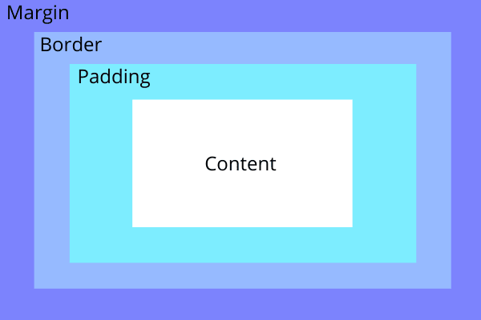

This week I learned how I could use an external stylesheet to format my html in a way that was more pleasent to the eye. I learned that CSS and HTML work hand and hand to make this as easy as possible for the developer to be able to manipulate simple and complex html in anyway they want. This made coding my blog a lot more simple so I could have a standard format across all of my blog pages. I found an article by Mozilla that goes over the best practices when it comes to organizing your CSS file. I looked into this article because I don't want to have an unreadable CSS file after using it for all of my blogs. The article talked about formatting with either a single line or break up everything into new lines. I took the new line approach so I could clearly seperate everything until I become more familiar with the ins and outs of CSS. You can also make comments within CSS so you can easily seperate your CSS for all of your HTML pages. I really like how you can make variables in CSS so you can use them in multiples places. This application of CSS is really nice when for examples you want to save a specific hex color to use later on.
$base-color: #c6538c;
.box {
border: 2px solid $base-color;
}
h2 {
color: $base-color;
}
From classtime I learned about the CSS box model and how all of the elements align. This helped me when it came to setting up my boxes within my pages and will soon help when I add borders to different areas of text. On the outside of your original content is padding which is used to give you alittle extra space of room between the border and plain text. The border is surrounded by margin which is used to space out seperate areas of text, pictures, codesnippits, etc. This has helped to give me a better understanding of how to setup a webpage. I will use this to setup my static page to where it is visually pleasing.
